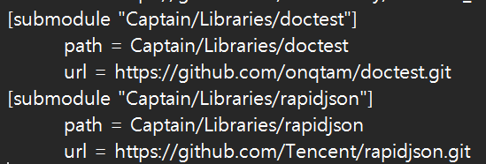

(Git Error) Git submodule branch 적용불가 문제
.gitmodules에 branch를 지정해도 서브모듈에 적용되지 않을 때, git config로 강제 적용하고 확인한 뒤 git submodule update --remote로 업데이트하는 순서.
Git submodule의 branch 적용은 아래 .gitmodules 파일에서 적용할 수 있습니다.

그러나 적용이 안되는 경우가 있는데 아래 명령어로 강제 적용이 가능합니다.
git config submodule.Captain/Libraries/submodule_name.branch Branchnamesubmodule_name과 Branchname을 적절하게 수정해야합니다.
git config --get submodule.Captain/Libraries/submodule_name.branch적용 후 위 명령어를 입력하면 앞서 강제적용한 branch 이름이 출력되어야 합니다. 아무것도 출력되지 않는다면 .git 폴더 내 config파일을 직접 수정해야합니다.
git submodule update --remote모두 적용되었다면 위 명령어를 통해 submodule을 업데이트 할 수 있고 만약 이 단계에서 적용되지 않는다면 submodule 이 들어있는 Libraries 폴더 내 내용을 모두 지워주면 됩니다.
원문: codespectrum.net, 2025-08-20 게시. 필자의 기술 블로그 코드스펙트럼(CODESPECTRUM)에 올렸던 글을 이곳으로 옮겨 왔습니다. 문장과 명령어는 원문 그대로 두고 서식만 정리했습니다.
다음 글
Dev · 노트B08
C++(C++ Error) terminate called after throwing an instance of 'std::runtime_error': Unable to open xml file
C++ 프로그램이 'Unable to open xml file' 런타임 에러로 종료될 때 확인할 것 — 필요한 폴더 디렉터리 구성과 해당 파일의 존재 여부.
Dev · 노트B05
Docker[Docker] Mattermost 외부접속 불가: Connection Refused, Mattermost-preview
Docker로 띄운 mattermost-preview에 외부에서 접속하면 Connection Refused가 뜰 때, 컨테이너를 --add-host 옵션과 함께 새로 만들어 해결하는 방법.